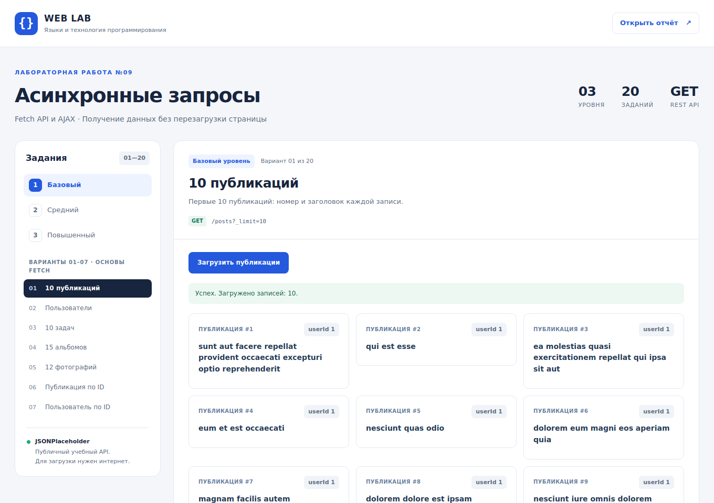
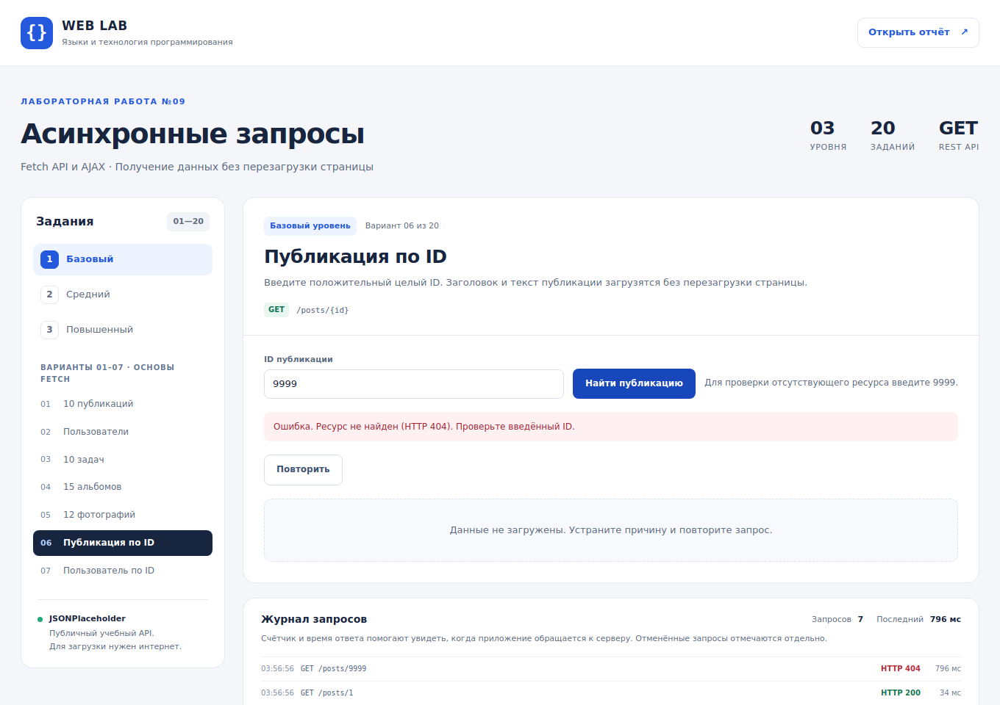
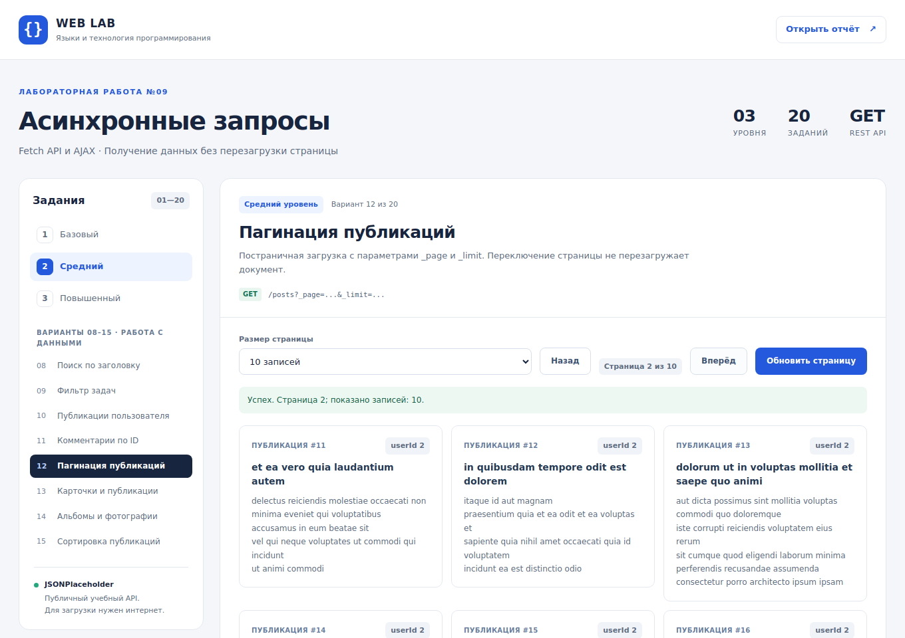
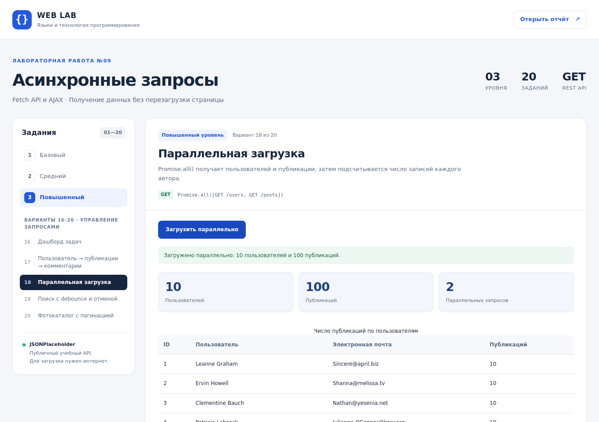
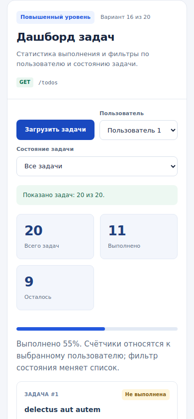

Лабораторная работа №9
Асинхронные запросы: Fetch API и AJAX.
Получение данных публичного REST API и отображение на странице.
ФИО и группу можно исправить прямо на странице перед печатью. Такое редактирование меняет только открытую страницу; для постоянного исправления отредактируйте report.html.
1. Цель и постановка задачи
Цель работы — освоить отправку асинхронных HTTP-запросов, чтение JSON, безопасное создание элементов DOM и обработку ошибок. Практический результат — приложение, в котором пользователь получает публикации, пользователей, задачи, альбомы, фотографии и комментарии без перезагрузки страницы.
По методическим указаниям достаточно одного индивидуального варианта. В данной работе по условию выполнены все варианты: семь базовых, восемь средних и пять повышенных. Каждый вариант доступен отдельно, поэтому его можно показать и проверить независимо.
Обязательные условия сохранены: используются fetch(), async/await, проверка response.ok и try/catch; предусмотрены состояния загрузки, успеха и ошибки, повторная попытка, проверка ID и безопасный вывод данных. Разметка, оформление и логика находятся в отдельных файлах.
2. Выполненные варианты
| № | Уровень | Функциональность | Как проверить |
|---|---|---|---|
| 1 | Базовый | Десять публикаций: ID и заголовок. | Загрузить список и посчитать карточки. |
| 2 | Базовый | Пользователи: имя и электронная почта. | Открыть список пользователей. |
| 3 | Базовый | Десять задач; выполненные визуально отмечены. | Сравнить оформление задач двух статусов. |
| 4 | Базовый | Первые пятнадцать альбомов: номер и название. | Проверить число карточек и ID. |
| 5 | Базовый | Двенадцать фотографий с названием и миниатюрой; текст при недоступности изображения. | Загрузить фотографии; проверить текстовую замену недоступной миниатюры. |
| 6 | Базовый | Публикация по введённому ID: заголовок и текст. | Ввести 1, затем 9999. |
| 7 | Базовый | Пользователь по ID: имя, город и компания. | Ввести существующий ID, затем пустое значение. |
| 8 | Средний | Поиск публикаций по заголовку в уже загруженном массиве. | Ввести фрагмент заголовка; новые запросы для фильтра не нужны. |
| 9 | Средний | Фильтр задач: все, выполненные, невыполненные. | Последовательно переключить три режима. |
| 10 | Средний | Публикации выбранного пользователя через /posts?userId=…. | Сменить пользователя и проверить userId. |
| 11 | Средний | Комментарии публикации по ID: авторы и тексты. | Ввести ID публикации и загрузить комментарии. |
| 12 | Средний | Пагинация публикаций с параметрами _page и _limit. | Перейти вперёд и назад, изменить размер страницы. |
| 13 | Средний | Карточки пользователей с загрузкой публикаций по кнопке. | Нажать «Показать публикации» у разных пользователей. |
| 14 | Средний | Каталог альбомов с подгрузкой фотографий выбранного альбома. | Выбрать два разных альбома. |
| 15 | Средний | Сортировка публикаций по ID и названию, повторный запрос. | Изменить порядок и снова загрузить данные. |
| 16 | Повышенный | Дашборд задач: количество выполненных и невыполненных, фильтр по пользователю. | Сравнить показатели для всех пользователей и одного пользователя. |
| 17 | Повышенный | Последовательная загрузка: пользователь → публикации → комментарии. | Выбрать пользователя, затем публикацию, затем другого пользователя. |
| 18 | Повышенный | Параллельная загрузка пользователей и публикаций через Promise.all(), подсчёт публикаций каждого автора. | Загрузить статистику и проверить результаты подсчёта. |
| 19 | Повышенный | Поиск с задержкой ввода и отменой предыдущего запроса через AbortController. | Быстро менять поисковую фразу при медленной сети. |
| 20 | Повышенный | Фотографии по альбомам: пагинация, состояния загрузки и ошибки, кнопка повтора. | Сменить альбом, перейти на следующую страницу, проверить ошибку сети и повтор. |
3. Анализ API и JSON
Источник данных — учебный сервис JSONPlaceholder. Базовый адрес: https://jsonplaceholder.typicode.com. Для работы используются GET-запросы. Списковые маршруты возвращают массивы, а запрос ресурса по ID — отдельный объект. Данные демонстрационные, поэтому приложение не предназначено для ведения реальных пользовательских записей. [1]
| Ресурс | Используемые поля | Назначение и связь |
|---|---|---|
/posts | id, userId, title, body | Публикация связана с автором через userId. |
/users | id, name, email, address.city, company.name | Город и компания лежат во вложенных объектах. |
/todos | id, userId, title, completed | completed — логическое значение статуса задачи. |
/albums | id, userId, title | Альбом связан с пользователем. |
/photos | id, albumId, title, url, thumbnailUrl | Фотография связана с альбомом через albumId. |
/comments | id, postId, name, email, body | Комментарий относится к публикации через postId; почта используется для обозначения автора. |
Схематический пример публикации; значения текста ниже условные:
{
"userId": 1,
"id": 1,
"title": "Пример заголовка",
"body": "Пример текста публикации"
}Для зависимых данных используются фильтры и вложенные маршруты, например /posts?userId=1 и /posts/1/comments. В приложении отсутствующий ресурс не подменяется вымышленным объектом. Пустой массив отображается как отсутствие результатов, а не как сбой сети. [1]
Ответ сервера сначала проверяется по HTTP-статусу. Свойство response.ok истинно при коде от 200 до 299. Затем await response.json() читает и разбирает тело ответа. После этого приложение проверяет, соответствует ли полученное значение ожидаемому типу — массиву или объекту. [3] [4]
4. Схема работы и устройство проекта
Если запрос или разбор ответа завершается ошибкой, обработчик catch выводит понятное сообщение и открывает повторную попытку. При новом выборе прежняя операция отменяется; её поздний ответ не должен заменять актуальный результат.
| Файл | Ответственность |
|---|---|
| index.html | Разметка приложения, выбор уровня и варианта, рабочая область. |
| style.css | Оформление, адаптация к ширине экрана, карточки, формы и состояния. |
| app.js | Запросы, отображение результатов, все 20 вариантов, отмена операций и статистика. |
| report.html | Отчёт, ответы на контрольные вопросы и материалы проверки. |
| README.txt | Инструкция запуска и демонстрации работы. |
| screenshots/ | Снимки приложения, полученные при проверке. |
Общий код вынесен в объект Lab. Функция Lab.request() выполняет запрос и собирает данные о нём. Lab.panel() управляет загрузкой, результатом, ошибкой и повтором. Функции карточек создают элементы через document.createElement(), а текст записывают через textContent. Варианты зарегистрированы через Lab.register(), что позволяет выбирать их без перезагрузки документа.
Проверка ID допускает только положительное целое число. При этом большое корректно записанное число, например 9999, разрешается отправить серверу: так проверяется именно отсутствие ресурса. Ввод пустой строки, дробного или отрицательного числа останавливается до запроса.
В связанном интерфейсе смена пользователя очищает старые публикации и комментарии. В поиске с задержкой таймер сокращает число запросов во время ввода, а отмена запроса и проверка актуальности защищают результаты от нарушения порядка ответов. Для независимых списков в варианте 18 применяется Promise.all(). Если данные одного списка получить не удалось, интерфейс сообщает об ошибке вместо неполной статистики.
5. Дополнительная функция
Добавлена статистика запросов и измерение времени ответа. Она помогает понять, выполняется ли новый запрос при действии пользователя, сравнить локальную фильтрацию с повторной загрузкой и заметить медленное соединение.
Например, в варианте 8 после загрузки списка поиск меняет только представление массива. В варианте 19 изменение поисковой строки после задержки запускает очередной запрос. Счётчик позволяет увидеть эту разницу во время защиты. Время измеряется на стороне браузера и включает ожидание сети и обработку ответа; это не измерение времени работы только сервера.
6. Тестирование
Проверяются успешная загрузка, ошибки HTTP и сети, повторная попытка, фильтры и пагинация. Для ошибок сети можно использовать режим Offline в панели Network инструментов разработчика. Проверку отсутствующего объекта следует выполнять с корректным по формату, но несуществующим ID. Таблица фиксирует способ проверки и фактически наблюдённый результат. Дата проверки: 28 октября 2026 года. Итог: 37 сценариев пройдено, необработанных ошибок JavaScript не зафиксировано.
| № | Шаги проверки | Ожидаемый результат | Фактический результат | Статус |
|---|---|---|---|---|
| 1 | Живой API: обычная загрузка Открыть вариант 1; дождаться Fetch к JSONPlaceholder. Реальный API / браузер | Десять карточек с ID и заголовком; состояние успеха. | Получены 10 публикаций, ID 1–10. Реальный GET завершился HTTP 200. | Пройден |
| 2 | Живой API: ошибка сети и повтор В варианте 1 включить Offline, повторить загрузку, вернуть сеть и нажать «Повторить». Реальный API / браузер | Ошибка сети и кнопка повтора; после восстановления десять карточек. | Offline отклонил fetch; показано «Ошибка. Не удалось получить данные. Проверьте интернет, доступность API и повторите запрос.». После возврата сети повтор получил 10 карточек. | Пройден |
| 3 | Живой API: отсутствующий ресурс В варианте 6 ввести ID 9999 и нажать «Найти публикацию». Реальный API / браузер | HTTP 404, понятное сообщение и «Повторить». | Ошибка. Ресурс не найден (HTTP 404). Проверьте введённый ID. | Пройден |
| 4 | Живой API: пагинация публикаций Вариант 12: открыть первую страницу, нажать «Вперёд», затем «Назад». Реальный API / браузер | ID 11–20 на второй странице; ID 1–10 после возврата. | Сервер вернул ID 11–20 и X-Total-Count=100; после возврата показаны ID 1–10. | Пройден |
| 5 | Живой API: параллельные запросы Вариант 18: нажать «Загрузить параллельно». Реальный API / браузер | Таблица десяти пользователей, по десять публикаций на каждого. | Оба GET завершились успешно. Получены 10 пользователей, 100 публикаций, по 10 на пользователя. | Пройден |
| 6 | Живой API: дашборд и мобильный экран На ширине 390 px загрузить вариант 16, выбрать пользователя 1. Реальный API / браузер | 20 задач выбранного пользователя; статистика согласована; горизонтальной прокрутки нет. | Показано 20 задач; счётчики: 20, 11, 9; горизонтального переполнения нет. | Пройден |
| 7 | Ошибки выполнения JavaScript Просмотреть pageerror за все live-сценарии. Реальный API / браузер | Ноль необработанных ошибок JavaScript. | Необработанных ошибок JavaScript не зафиксировано. | Пройден |
| 8 | Вариант 1 Открыть вариант 1. Контролируемая проверка: сохранённый JSON и перехват запросов браузером | Первые десять публикаций; записей: 10. | Показано 10 записей; обязательные поля и состояния проверены. | Пройден |
| 9 | Вариант 2 Открыть вариант 2. Контролируемая проверка: сохранённый JSON и перехват запросов браузером | Имена и почта пользователей; записей: 10. | Показано 10 записей; обязательные поля и состояния проверены. | Пройден |
| 10 | Вариант 3 Открыть вариант 3. Контролируемая проверка: сохранённый JSON и перехват запросов браузером | Десять задач и визуальное выделение выполненных; записей: 10. | Показано 10 записей; обязательные поля и состояния проверены. | Пройден |
| 11 | Вариант 4 Открыть вариант 4. Контролируемая проверка: сохранённый JSON и перехват запросов браузером | Первые пятнадцать альбомов; записей: 15. | Показано 15 записей; обязательные поля и состояния проверены. | Пройден |
| 12 | Вариант 5 Открыть вариант 5. Контролируемая проверка: сохранённый JSON и перехват запросов браузером | Двенадцать фотографий с текстовой заменой; записей: 12. | Показано 12 записей; обязательные поля и состояния проверены. | Пройден |
| 13 | Вариант 6 Открыть вариант 6. Контролируемая проверка: сохранённый JSON и перехват запросов браузером | Публикация по ID; записей: 1. | Показано 1 записей; обязательные поля и состояния проверены. | Пройден |
| 14 | Вариант 7 Открыть вариант 7. Контролируемая проверка: сохранённый JSON и перехват запросов браузером | Пользователь по ID, город и компания; записей: 1. | Показано 1 записей; обязательные поля и состояния проверены. | Пройден |
| 15 | Вариант 8: локальный поиск Загрузить публикации; ввести sunt; затем заведомо отсутствующее слово. Контролируемая проверка: сохранённый JSON и перехват запросов браузером | Результаты фильтруются без дополнительных запросов, пустой результат обработан. | По sunt найдено 7; новых HTTP-запросов 0. Пустой результат корректен. | Пройден |
| 16 | Вариант 9: фильтр задач Выбрать выполненные, невыполненные, затем все. Контролируемая проверка: сохранённый JSON и перехват запросов браузером | В каждом режиме только соответствующие задачи. | Выполненных 90, невыполненных 110, всего 200. | Пройден |
| 17 | Вариант 10: userId Выбрать пользователя 2. Контролируемая проверка: сохранённый JSON и перехват запросов браузером | GET /posts?userId=2 и только записи пользователя 2. | Получены публикации 11–20; запрос содержит userId=2. | Пройден |
| 18 | Вариант 11: комментарии Открыть комментарии публикации 2. Контролируемая проверка: сохранённый JSON и перехват запросов браузером | Пять комментариев с авторами и текстами. | Показаны комментарии 6–10 с именами, email и текстом. | Пройден |
| 19 | Вариант 12: пагинация Перейти со страницы 1 на 2; изменить размер до 20; дойти до конца. Контролируемая проверка: сохранённый JSON и перехват запросов браузером | Параметры _page/_limit корректны; первая/последняя границы заблокированы. | На странице 2 — ID 11–20; по 20 записей — 5 страниц, последний переход отключён. | Пройден |
| 20 | Вариант 13: карточки пользователей Открыть публикации пользователя 2 на его карточке. Контролируемая проверка: сохранённый JSON и перехват запросов браузером | До клика публикаций нет; после клика — 10 записей выбранного пользователя. | Публикации 11–20 загружены после клика на пользователе 2. | Пройден |
| 21 | Вариант 14: альбомы и фотографии Выбрать первый альбом в каталоге. Контролируемая проверка: сохранённый JSON и перехват запросов браузером | Загружены 100 альбомов; по клику 50 фотографий альбома 1. | Каталог содержит 100 альбомов; отдельный запрос вернул 50 фотографий альбома 1. | Пройден |
| 22 | Вариант 15: сортировка и обновление Сортировать по ID убыванию и названию; нажать повтор запроса. Контролируемая проверка: сохранённый JSON и перехват запросов браузером | Сортировка меняет порядок; повтор делает новый GET и сохраняет выбранный порядок. | При ID↓ первая запись 100, при названии↑ — 30; повторный GET выполнен. | Пройден |
| 23 | Вариант 16: дашборд Загрузить задачи; выбрать пользователя 2 и выполненные. Контролируемая проверка: сохранённый JSON и перехват запросов браузером | Счётчики соответствуют пользователю; список учитывает фильтр статуса. | Пользователь 2: всего 20, выполнено 8, осталось 12; список согласован. | Пройден |
| 24 | Вариант 17: связанная цепочка Загрузить пользователей; выбрать 2, публикацию 11; затем выбрать 3. Контролируемая проверка: сохранённый JSON и перехват запросов браузером | Пользователь → его публикации → их комментарии; смена пользователя очищает комментарии. | Пользователь 2 → пост 11 → комментарии 51–55; при выборе 3 комментарии очищены. | Пройден |
| 25 | Вариант 18: Promise.all Нажать параллельную загрузку; сопоставить времена и число публикаций. Контролируемая проверка: сохранённый JSON и перехват запросов браузером | Два запроса перекрываются во времени; у каждого из 10 пользователей 10 публикаций. | GET /users и /posts перекрылись; таблица содержит 10 пользователей по 10 публикаций. | Пройден |
| 26 | Вариант 19: debounce Быстро ввести s → su → sunt с интервалами 100 мс. Контролируемая проверка: сохранённый JSON и перехват запросов браузером | За серию ввода отправлен один GET после паузы 400 мс. | Три изменения поля → один запрос; найдено 7 публикаций по sunt. | Пройден |
| 27 | Вариант 20: фотопагинация Загрузить альбомы; пройти 5 страниц фотографий первого альбома. Контролируемая проверка: сохранённый JSON и перехват запросов браузером | По 12 фотографий, в конце 2; кнопки границ недоступны. | Страницы 1–4 содержат по 12 фото, страница 5 — ID49 и 50; границы заблокированы. | Пройден |
| 28 | Сетевой сбой и повтор После успешной загрузки отключить транспорт fetch через route.abort; затем восстановить и нажать «Повторить». Контролируемая проверка: сохранённый JSON и перехват запросов браузером | Ошибка сети, доступная кнопка повтора, затем успешное обновление. | Ошибка. Не удалось получить данные. Проверьте интернет, доступность API и повторите запрос. После восстановления показаны 10 записей. | Пройден |
| 29 | HTTP 404: отсутствующий ресурс В варианте 6 ввести ID 9999 и выполнить запрос. Контролируемая проверка: сохранённый JSON и перехват запросов браузером | HTTP 404 превращается в понятную ошибку с повтором; старые данные очищены. | Ошибка. Ресурс не найден (HTTP 404). Проверьте введённый ID. | Пройден |
| 30 | Некорректный ID В варианте 6 ввести -1. Контролируемая проверка: сохранённый JSON и перехват запросов браузером | Ошибка валидации до отправки запроса. | Ошибка показана, лишний HTTP-запрос не отправлен. | Пройден |
| 31 | Повреждённый JSON и форма ответа Вернуть невалидный JSON, затем объект вместо списка; повторить с правильным ответом. Контролируемая проверка: сохранённый JSON и перехват запросов браузером | Обе ошибки перехвачены; после повтора список восстановлен. | Ошибка синтаксиса JSON и неверная структура обработаны; повтор вернул 10 публикаций. | Пройден |
| 32 | Безопасный DOM: XSS Вернуть заголовок и текст с HTML-тегами и обработчиком onerror. Контролируемая проверка: сохранённый JSON и перехват запросов браузером | Разметка показана как текст, JavaScript не исполняется. | Опасный HTML остался текстом; элементов img и выполнения onerror нет. | Пройден |
| 33 | Отмена устаревшего поиска Задержать ответ поиска sunt; ввести qui до его завершения. Контролируемая проверка: сохранённый JSON и перехват запросов браузером | Первый fetch отменён; после позднего ответа остаются только результаты qui. | Первый запрос отменён; после ожидания старого ответа остаются 33 результатов qui. | Пройден |
| 34 | Повтор загрузки фотостраницы В варианте 20 оборвать запрос следующей страницы; восстановить и нажать повтор. Контролируемая проверка: сохранённый JSON и перехват запросов браузером | Ошибка в панели фотографий; повтор открывает запрошенную страницу 2. | После повторной попытки показаны фото 13–24; пагинация снова доступна. | Пройден |
| 35 | Мобильная ширина Открыть варианты 18 и 17 при ширине 390 px. Контролируемая проверка: сохранённый JSON и перехват запросов браузером | Страница не прокручивается горизонтально; таблица помещена в прокручиваемый контейнер. | Ширина документа 390 px; переполнения в вариантах 18 и 17 нет. | Пройден |
| 36 | Отсутствие необработанных JS-ошибок Собрать события pageerror за все проверки. Контролируемая проверка: сохранённый JSON и перехват запросов браузером | Список pageerror пуст. | Необработанных исключений JavaScript: 0. | Пройден |
| 37 | Пагинация: ошибка смены размера Перейти на страницу 5 по 20 записей; сменить размер на 5 при сбое сети; нажать обновление. Контролируемая проверка: сохранённый JSON и перехват запросов браузером | После сбоя сохраняется сброс на страницу 1; повтор с новым размером загружает ID1–5. | После сетевого сбоя при смене размера обновление показало первую страницу: ID1–5. | Пройден |
При проверке важно различать контролируемую имитацию ответа в автоматическом тесте и запрос к работающему публичному сервису. Способ получения данных и моделирования ошибки указан в результатах проверки. Доступность внешнего API в дальнейшем зависит от сети и самого сервиса.
7. Скриншоты приложения
Снимки фиксируют состояния приложения во время проверки. Они дополняют таблицу тестирования и не заменяют проверку интерактивных действий.





8. Ответы на контрольные вопросы
Нумерация 8–19 сохранена из методических указаний.
8. Что такое AJAX и REST API?
AJAX — подход, при котором страница обменивается данными с сервером и обновляет отдельные элементы без полной перезагрузки. REST API — интерфейс, организованный вокруг ресурсов и операций над ними средствами HTTP. В работе ресурсами выступают публикации, пользователи и другие сущности; чтение выполняется методом GET.
9. Чем асинхронный запрос отличается от синхронного?
Синхронная операция задерживает дальнейшее выполнение вызывающего кода до получения результата. Асинхронный запрос позволяет браузеру продолжать обработку других событий. await приостанавливает конкретную асинхронную функцию, а не всю страницу.
10. Что возвращает fetch()?
fetch() возвращает Promise. При успешном получении HTTP-ответа он разрешается объектом Response. Это ещё не готовые данные приложения: тело ответа нужно прочитать отдельно. [2]
11. Для чего нужны async и await?
async объявляет функцию, возвращающую Promise. await позволяет внутри неё дождаться результата Promise и продолжить работу с полученным значением. Отклонение Promise можно обработать через try/catch. [2]
12. Почему следует проверять response.ok?
Ответ с кодом 404 или 500 обычно не отклоняет Promise, возвращённый fetch(): HTTP-ответ всё же получен. Поэтому приложение самостоятельно проверяет статус и создаёт ошибку при !response.ok. [2] [3]
13. Что делает response.json()?
Метод асинхронно читает тело ответа и разбирает его как JSON. Получается значение JavaScript: например объект или массив. Некорректный JSON вызывает ошибку разбора, которую также нужно обработать. [4]
14. Как обработать ошибку сети?
Вызов await fetch() помещают в try/catch. В catch показывают сообщение и возможность повторить запрос, а состояние загрузки завершают независимо от результата. Программную отмену запроса обрабатывают отдельно, чтобы она не выглядела неожиданным сбоем. [2]
15. Что такое CORS?
CORS — механизм HTTP-заголовков, с помощью которого сервер разрешает браузеру доступ к ответу из другого источника. Источник определяется схемой, доменом и портом. Если разрешения нет, браузер ограничивает доступ JavaScript к ответу. Режим no-cors не позволяет получить обычный читаемый JSON-ответ и не является решением для этой лабораторной. [6]
16. Чем отличаются GET и POST?
GET предназначен для получения представления ресурса, параметры обычно передаются в URL. POST отправляет данные для обработки сервером; например, может использоваться для создания записи. Тело запроса передают через параметр body. В этой лабораторной требуется чтение ресурсов, поэтому используется GET. [2]
17. Почему нельзя доверять содержимому ответа сервера?
Ответ может иметь другую структуру, отсутствующие поля, неверные типы или текст с HTML-разметкой. Поэтому код проверяет структуру данных, использует запасные подписи для отсутствующих полей и вставляет строки как текст. Использование textContent не превращает содержимое заголовка или комментария в исполняемую разметку.
18. Как показать индикатор загрузки?
Перед отправкой запроса нужно записать сообщение «Загрузка…» в область статуса и отметить её как занятую. После успешного ответа показать число полученных записей, при ошибке — сообщение и повтор. В проекте этой последовательностью управляет общая панель, поэтому поведение одинаково во всех вариантах.
19. Для чего нужен AbortController?
Он позволяет отменять асинхронные операции. Его signal передают в fetch(), а abort() вызывают при необходимости отмены. Это полезно при новом поисковом вводе, смене варианта или выбранного пользователя. Дополнительная проверка актуальности операции не позволяет запоздалому ответу изменить интерфейс. [5]
9. Вывод
Разработано приложение со всеми двадцатью вариантами лабораторной работы. В нём объединены получение ресурсов по GET, поиск, сортировка, фильтрация, пагинация, загрузка связанных данных и параллельные запросы. Обработка состояний и ошибок вынесена в общий код, а результаты выводятся безопасными DOM-операциями.
Работа показывает различие между локальной обработкой загруженного массива и новым сетевым запросом. Для устойчивого интерфейса недостаточно получить JSON: необходимо проверить статус ответа, обработать отсутствие данных, предоставить повтор и учитывать отмену устаревших операций. Полученные навыки применимы к клиентским приложениям, которые используют внешние API.
10. Исходный код
Полные рабочие исходники находятся рядом с отчётом: index.html, style.css и app.js. Файлы можно открыть в текстовом редакторе. Код ниже повторяет содержимое проекта для просмотра в составе отчёта.
index.html — полный исходный код
<!doctype html>
<html lang="ru">
<head>
<meta charset="UTF-8">
<meta name="viewport" content="width=device-width, initial-scale=1">
<meta name="description" content="Лабораторная работа №9: все 20 заданий трёх уровней по Fetch API и AJAX.">
<title>Лабораторная №9 · Fetch API / AJAX</title>
<link rel="stylesheet" href="style.css">
<script src="app.js" defer></script>
</head>
<body>
<a class="skip-link" href="#main">Перейти к заданию</a>
<header class="topbar">
<a class="brand" href="#variant-1" aria-label="Лабораторная работа 9, первое задание"><span class="brand-mark">{}</span><span>WEB LAB<span class="brand-sub">Языки и технология программирования</span></span></a>
<a class="report-link" href="report.html" target="_blank" rel="noopener">Открыть отчёт <span aria-hidden="true">↗</span></a>
</header>
<div class="page-heading">
<div><p class="eyebrow">ЛАБОРАТОРНАЯ РАБОТА №09</p><h1>Асинхронные запросы</h1><p class="page-intro">Fetch API и AJAX · Получение данных без перезагрузки страницы</p></div>
<div class="overview"><span><strong>03</strong>уровня</span><span><strong>20</strong>заданий</span><span><strong>GET</strong>REST API</span></div>
</div>
<div class="layout">
<aside class="sidebar" aria-label="Выбор задания">
<div class="sidebar-heading"><h2>Задания</h2><span class="badge">01—20</span></div>
<div class="level-tabs" role="group" aria-label="Уровень сложности">
<button type="button" data-level="1" aria-pressed="true"><b>1</b> Базовый</button>
<button type="button" data-level="2" aria-pressed="false"><b>2</b> Средний</button>
<button type="button" data-level="3" aria-pressed="false"><b>3</b> Повышенный</button>
</div>
<p id="level-description" class="level-description"></p>
<nav id="variant-nav" aria-label="Варианты уровня"></nav>
<div class="sidebar-note"><span class="live-dot" aria-hidden="true"></span><div><strong>JSONPlaceholder</strong><p>Публичный учебный API.<br>Для загрузки нужен интернет.</p></div></div>
</aside>
<main id="main" class="main-area">
<div class="workspace-shell">
<header class="workspace-heading">
<div class="heading-tags"><span id="level-tag" class="badge accent"></span><span id="variant-tag" class="muted"></span></div>
<h2 id="variant-title"></h2><p id="variant-description"></p>
<div class="endpoint"><span>GET</span><code id="variant-endpoint"></code></div>
</header>
<div id="workspace"></div>
</div>
<section class="activity" aria-label="Журнал HTTP-запросов">
<div class="activity-header"><h2>Журнал запросов</h2><div class="activity-metrics"><span>Запросов <strong id="request-count">0</strong></span><span>Последний <strong id="response-time">—</strong></span></div></div>
<p class="hint">Счётчик и время ответа помогают увидеть, когда приложение обращается к серверу. Отменённые запросы отмечаются отдельно.</p>
<ol id="request-log" class="request-log" aria-label="Последние восемь запросов"><li class="log-placeholder">История появится после первого запроса.</li></ol>
</section>
</main>
</div>
<footer class="footer"><span>Лабораторная №9 · HTML / CSS / JavaScript</span><a href="https://jsonplaceholder.typicode.com/" target="_blank" rel="noopener noreferrer">Документация API ↗</a></footer>
<noscript><p class="noscript">Для лабораторной необходимо включить JavaScript в браузере.</p></noscript>
</body>
</html>
style.css — полный исходный код
/* Лабораторная №9. Все стили находятся в отдельном файле. */ :root {
--bg:#f4f6fa;
--surface:#fff;
--ink:#17253e;
--muted:#5c6b80;
--line:#e3e8f0;
--primary:#2459de;
--primary-dark:#1847bc;
--pale:#edf3ff;
--green:#087253;
--red:#b52b3a;
--radius:16px;
}
* {
box-sizing:border-box;
}
html {
scroll-behavior:smooth;
}
body {
margin:0;
background:var(--bg);
color:var(--ink);
font-family:Inter,-apple-system,BlinkMacSystemFont,"Segoe UI",Arial,sans-serif;
font-size:15px;
line-height:1.6;
}
button,input,select {
font:inherit;
}
button,a,input,select {
-webkit-tap-highlight-color:transparent;
}
button {
cursor:pointer;
}
a {
color:var(--primary);
text-underline-offset:3px;
}
button:focus-visible,a:focus-visible,input:focus-visible,select:focus-visible,summary:focus-visible {
outline:3px solid #9fbcff;
outline-offset:3px;
}
[hidden] {
display:none!important;
}
h1,h2,h3,p {
margin-top:0;
}
h1,h2,h3 {
line-height:1.25;
}
button:disabled {
cursor:not-allowed;
opacity:.48;
}
code {
font-family:Consolas,"SFMono-Regular",monospace;
font-size:.9em;
overflow-wrap:anywhere;
}
.topbar {
height:90px;
background:#fff;
border-bottom:1px solid var(--line);
padding:0 max(28px,calc((100vw - 1376px)/2));
display:flex;
align-items:center;
justify-content:space-between;
gap:20px;
}
.brand {
display:flex;
align-items:center;
gap:12px;
text-decoration:none;
color:var(--ink);
font-size:17px;
font-weight:800;
letter-spacing:.03em;
}
.brand-mark {
width:44px;
height:44px;
display:grid;
place-items:center;
background:var(--primary);
color:#fff;
border-radius:12px;
font-family:monospace;
font-size:24px;
}
.brand-sub {
display:block;
font-size:11px;
font-weight:500;
letter-spacing:0;
color:var(--muted);
}
.report-link {
font-size:13px;
font-weight:650;
text-decoration:none;
border:1px solid var(--line);
padding:9px 14px;
border-radius:9px;
}
.report-link span {
margin-left:10px;
}
.page-heading {
max-width:1432px;
margin:auto;
padding:40px 28px 30px;
display:flex;
justify-content:space-between;
align-items:center;
gap:28px;
}
.eyebrow {
font-size:11px;
font-weight:750;
letter-spacing:.14em;
color:var(--primary);
margin-bottom:11px;
}
h1 {
font-size:clamp(27px,3vw,38px);
letter-spacing:-.035em;
margin-bottom:10px;
}
.page-intro {
font-size:14px;
color:var(--muted);
margin-bottom:0;
}
.overview {
display:flex;
gap:32px;
flex-shrink:0;
}
.overview span {
display:flex;
flex-direction:column;
font-size:11px;
color:var(--muted);
text-transform:uppercase;
letter-spacing:.07em;
}
.overview strong {
font-size:25px;
letter-spacing:-.025em;
color:var(--ink);
line-height:1.3;
}
.layout {
max-width:1432px;
margin:auto;
padding:0 28px 32px;
display:grid;
grid-template-columns:278px minmax(0,1fr);
gap:24px;
align-items:start;
}
.sidebar {
border:1px solid var(--line);
background:var(--surface);
border-radius:var(--radius);
padding:20px 16px;
position:sticky;
top:16px;
}
.sidebar-heading {
display:flex;
justify-content:space-between;
align-items:center;
margin:0 4px 17px;
}
.sidebar-heading h2 {
font-size:16px;
margin:0;
}
.badge {
display:inline-flex;
align-items:center;
font-size:11px;
font-weight:650;
line-height:1.6;
background:#f0f3f7;
color:var(--muted);
border-radius:6px;
padding:4px 8px;
white-space:nowrap;
}
.badge.accent {
color:var(--primary);
background:var(--pale);
}
.level-tabs {
display:flex;
flex-direction:column;
gap:5px;
}
.level-tabs button {
border:0;
background:transparent;
text-align:left;
color:var(--muted);
padding:9px 10px;
border-radius:9px;
font-size:13px;
display:flex;
gap:10px;
align-items:center;
}
.level-tabs button b {
border:1px solid var(--line);
display:grid;
place-items:center;
width:25px;
height:25px;
border-radius:7px;
font-size:12px;
}
.level-tabs button[aria-pressed=true] {
background:var(--pale);
color:var(--primary);
font-weight:700;
}
.level-tabs button[aria-pressed=true] b {
background:var(--primary);
color:#fff;
border-color:var(--primary);
}
.level-description {
font-size:10px;
font-weight:750;
letter-spacing:.09em;
text-transform:uppercase;
color:#677992;
margin:22px 10px 8px;
}
#variant-nav {
display:flex;
flex-direction:column;
gap:3px;
}
.variant-button {
border:0;
background:transparent;
display:flex;
align-items:center;
gap:9px;
width:100%;
border-radius:8px;
padding:9px 10px;
color:var(--muted);
font-size:12px;
line-height:1.4;
text-align:left;
}
.variant-button:hover {
background:#f4f6fb;
}
.variant-button .nav-number {
font-variant-numeric:tabular-nums;
flex:0 0 22px;
font-size:11px;
color:#718198;
}
.variant-button[aria-current=true] {
background:var(--ink);
color:white;
font-weight:650;
}
.variant-button[aria-current=true] .nav-number {
color:#b6d0ff;
}
.sidebar-note {
border-top:1px solid var(--line);
margin:21px 6px 0;
padding-top:17px;
display:flex;
gap:9px;
font-size:11px;
}
.sidebar-note strong {
font-size:11px;
}
.sidebar-note p {
color:var(--muted);
line-height:1.6;
margin:3px 0 0;
}
.live-dot {
background:#21a87b;
width:7px;
height:7px;
border-radius:50%;
margin-top:6px;
flex-shrink:0;
}
.main-area {
min-width:0;
}
.workspace-shell {
background:var(--surface);
border:1px solid var(--line);
border-radius:var(--radius);
overflow:hidden;
}
.workspace-heading {
padding:26px 28px 22px;
border-bottom:1px solid var(--line);
}
.heading-tags {
display:flex;
gap:12px;
align-items:center;
margin-bottom:13px;
font-size:11px;
}
#variant-title {
font-size:25px;
letter-spacing:-.025em;
margin-bottom:10px;
}
#variant-description {
font-size:13px;
color:var(--muted);
max-width:740px;
margin-bottom:16px;
}
.endpoint {
display:flex;
align-items:flex-start;
gap:10px;
font-size:12px;
}
.endpoint>span {
font-weight:800;
color:var(--green);
background:#e9f6f0;
font-size:10px;
border-radius:4px;
padding:2px 6px;
}
.endpoint code {
color:#4c5d77;
line-height:2;
}
#workspace {
padding:24px 28px 28px;
min-height:250px;
}
.panel+.panel {
margin-top:28px;
border-top:1px solid var(--line);
padding-top:22px;
}
.panel .panel-title,.section-title {
font-size:16px;
margin-bottom:17px;
}
.controls,.toolbar {
display:flex;
flex-wrap:wrap;
gap:12px;
align-items:flex-end;
margin-bottom:18px;
}
.field {
display:flex;
flex-direction:column;
gap:5px;
min-width:160px;
flex:1;
}
.field label {
font-size:11px;
font-weight:700;
color:var(--muted);
}
input,select {
border:1px solid #d7dfeb;
background:#fff;
color:var(--ink);
border-radius:8px;
min-height:40px;
padding:8px 11px;
max-width:100%;
min-width:0;
width:100%;
font-size:13px;
}
input::placeholder {
color:#8591a3;
}
input[type=checkbox] {
min-height:auto;
width:auto;
}
.button {
border:1px solid transparent;
background:var(--primary);
color:#fff;
padding:10px 16px;
border-radius:8px;
font-size:12px;
font-weight:650;
min-height:40px;
transition:background .15s;
}
.button:hover:not(:disabled) {
background:var(--primary-dark);
}
.button.secondary {
background:#fff;
border-color:#d7dfeb;
color:#3e5373;
}
.button.secondary:hover:not(:disabled) {
background:#f4f7fb;
}
.button.small {
font-size:11px;
min-height:32px;
padding:6px 11px;
}
.button.danger {
color:var(--red);
background:#fff0f1;
border-color:#f5cbd1;
}
.status {
border-radius:8px;
padding:11px 13px;
background:#f3f5f9;
color:var(--muted);
font-size:12px;
line-height:1.5;
margin:0 0 18px;
}
.status[data-state=loading] {
color:#1c4cc4;
background:#eef3ff;
}
.status[data-state=loading]::before {
content:"";
display:inline-block;
vertical-align:-2px;
width:11px;
height:11px;
border:2px solid #a7bff2;
border-top-color:var(--primary);
border-radius:50%;
animation:spin 1s linear infinite;
margin-right:8px;
}
.status[data-state=success] {
color:#126147;
background:#edf8f2;
}
.status[data-state=error] {
color:#a32636;
background:#fff0f2;
overflow-wrap:anywhere;
}
.retry-button {
margin:0 0 18px;
}
.cards {
display:grid;
grid-template-columns:repeat(auto-fit,minmax(min(100%,280px),1fr));
gap:13px;
align-items:start;
}
.item-card {
border:1px solid var(--line);
background:#fff;
border-radius:10px;
padding:17px 18px;
min-width:0;
overflow-wrap:anywhere;
position:relative;
}
.item-card h3 {
font-size:14px;
font-weight:650;
line-height:1.55;
margin:9px 0 8px;
color:#233955;
}
.item-card p {
font-size:12px;
line-height:1.7;
margin-bottom:8px;
white-space:pre-line;
}
.item-card p:last-child {
margin-bottom:0;
}
.item-card .button {
margin-top:10px;
}
.id-tag {
font-size:10px;
font-weight:700;
color:#677d9e;
letter-spacing:.03em;
}
.card-meta {
display:flex;
align-items:center;
justify-content:space-between;
gap:8px;
}
.muted,.hint {
color:var(--muted);
}
.hint {
font-size:12px;
line-height:1.7;
}
.empty {
grid-column:1/-1;
padding:32px 20px;
background:#f7f9fc;
border:1px dashed #d8e1ef;
border-radius:10px;
text-align:center;
color:var(--muted);
font-size:13px;
}
.todo-card.completed {
border-color:#cde8da;
background:#f6fbf8;
}
.todo-card.completed h3 {
text-decoration:line-through;
text-decoration-color:#8bb8a2;
color:#4b7561;
}
.todo-state {
font-size:10px;
font-weight:700;
border-radius:5px;
padding:3px 7px;
white-space:nowrap;
color:#856012;
background:#fff5da;
}
.completed .todo-state {
color:var(--green);
background:#e5f4eb;
}
.photo-card {
padding:0;
overflow:hidden;
}
.photo-card .photo-frame {
height:170px;
display:grid;
place-items:center;
background:#edf2f9;
color:#6b7f9c;
}
.photo-frame img {
width:100%;
height:100%;
object-fit:cover;
}
.photo-frame .photo-fallback {
text-align:center;
font-size:12px;
padding:20px;
}
.photo-content {
padding:13px 16px 16px;
}
.photo-content h3 {
font-size:12px;
margin-bottom:0;
}
.stat-grid {
display:grid;
grid-template-columns:repeat(auto-fit,minmax(130px,1fr));
gap:12px;
margin:0 0 19px;
grid-column:1/-1;
}
.stat-box {
background:#f3f6fc;
border:1px solid #e2e9f5;
border-radius:9px;
padding:15px;
}
.stat-box .metric {
display:block;
font-size:27px;
font-weight:750;
letter-spacing:-.025em;
color:#203f7e;
line-height:1.3;
}
.stat-box .muted {
font-size:11px;
}
.split {
display:grid;
grid-template-columns:repeat(2,minmax(0,1fr));
gap:20px;
}
.stack {
display:flex;
flex-direction:column;
gap:15px;
}
.pagination {
display:flex;
flex-wrap:wrap;
justify-content:center;
align-items:center;
gap:12px;
margin-top:20px;
font-size:12px;
color:var(--muted);
grid-column:1/-1;
}
.progress-track {
height:7px;
background:#e3eaf4;
border-radius:99px;
overflow:hidden;
}
.progress-bar {
height:100%;
background:var(--primary);
border-radius:99px;
}
.table-wrap {
overflow-x:auto;
grid-column:1/-1;
}
.data-table {
border-collapse:collapse;
width:100%;
font-size:12px;
}
.data-table th,.data-table td {
text-align:left;
padding:12px;
border-bottom:1px solid var(--line);
}
.data-table th {
background:#f6f8fc;
color:var(--muted);
font-weight:650;
}
.selected {
border-color:var(--primary);
background:#f4f7ff;
}
.activity {
border:1px solid var(--line);
border-radius:var(--radius);
padding:20px 24px;
background:white;
margin-top:20px;
}
.activity-header {
display:flex;
gap:12px;
align-items:center;
justify-content:space-between;
flex-wrap:wrap;
}
.activity-header h2 {
font-size:14px;
margin:0;
}
.activity-metrics {
display:flex;
gap:18px;
font-size:11px;
color:var(--muted);
}
.activity-metrics strong {
color:var(--ink);
margin-left:5px;
font-variant-numeric:tabular-nums;
}
.activity>.hint {
margin:8px 0 14px;
font-size:11px;
}
.request-log {
list-style:none;
margin:0;
padding:0;
font-size:11px;
}
.request-log li {
display:flex;
align-items:center;
gap:9px;
padding:8px 0;
border-top:1px solid #edf0f5;
}
.request-log .log-time {
color:#8090a5;
font-variant-numeric:tabular-nums;
font-size:10px;
white-space:nowrap;
}
.request-log .log-path {
flex:1;
color:#4d607f;
min-width:0;
}
.request-log .log-outcome {
color:#137650;
font-size:10px;
white-space:nowrap;
font-weight:650;
}
.request-log .log-outcome.error {
color:var(--red);
}
.request-log .log-outcome.cancelled {
color:#7d6b92;
}
.request-log .log-ms {
color:#6a7a91;
font-size:10px;
min-width:46px;
text-align:right;
}
.request-log .log-placeholder {
color:var(--muted);
padding:15px 0;
}
.footer {
max-width:1432px;
margin:auto;
padding:0 28px 28px;
display:flex;
justify-content:space-between;
gap:20px;
color:#748196;
font-size:11px;
}
.footer a {
color:#64758f;
text-decoration:none;
}
.skip-link {
position:absolute;
top:-60px;
left:20px;
z-index:10;
background:#fff;
padding:12px;
}
.skip-link:focus {
top:12px;
}
.noscript {
position:fixed;
bottom:0;
background:#fff0f1;
color:var(--red);
padding:20px;
width:100%;
margin:0;
text-align:center;
}
.validation-note {
font-size:12px;
color:var(--muted);
}
@keyframes spin {
to {
transform:rotate(360deg);
}
}
@media(min-width:1400px) {
.cards {
grid-template-columns:repeat(3,minmax(0,1fr));
}
}
@media(max-width:1050px) {
.layout {
grid-template-columns:235px minmax(0,1fr);
gap:18px;
}
.overview {
gap:22px;
}
.workspace-heading,#workspace {
padding-left:22px;
padding-right:22px;
}
.cards {
grid-template-columns:repeat(auto-fit,minmax(min(100%,240px),1fr));
}
}
@media(max-width:760px) {
.topbar {
height:74px;
padding:0 18px;
}
.brand-sub {
display:none;
}
.brand {
font-size:14px;
}
.brand-mark {
width:37px;
height:37px;
font-size:20px;
}
.report-link {
font-size:11px;
padding:8px 10px;
}
.page-heading {
padding:25px 18px 22px;
display:block;
}
.overview {
margin-top:20px;
gap:28px;
}
.overview strong {
font-size:20px;
}
.overview span {
font-size:9px;
}
.page-intro {
font-size:12px;
}
.layout {
display:block;
padding:0 14px 25px;
}
.sidebar {
position:static;
margin-bottom:16px;
padding:15px;
}
.sidebar-heading {
margin-bottom:10px;
}
.level-tabs {
flex-direction:row;
}
.level-tabs button {
flex:1;
font-size:10px;
gap:5px;
padding:8px 5px;
}
.level-tabs button b {
width:21px;
height:21px;
flex-shrink:0;
}
.level-description {
margin-top:15px;
}
.sidebar-note {
display:none;
}
#variant-nav {
display:grid;
grid-template-columns:1fr 1fr;
gap:4px;
}
.variant-button {
font-size:11px;
padding:8px;
gap:5px;
}
.variant-button .nav-number {
flex-basis:19px;
}
.workspace-heading {
padding:21px 18px;
}
#variant-title {
font-size:22px;
}
#workspace {
padding:20px 18px;
}
.controls {
gap:10px;
}
.field {
min-width:140px;
}
.cards {
grid-template-columns:1fr;
}
.item-card {
padding:15px;
}
.photo-card {
padding:0;
}
.photo-card .photo-frame {
height:190px;
}
.split {
grid-template-columns:1fr;
}
.activity {
padding:18px;
}
.activity-metrics {
font-size:10px;
gap:10px;
}
.request-log .log-time {
display:none;
}
.request-log .log-path {
font-size:10px;
}
.footer {
padding:0 18px 25px;
font-size:10px;
flex-direction:column;
gap:4px;
}
}
@media(prefers-reduced-motion:reduce) {
html {
scroll-behavior:auto;
}
* {
animation:none!important;
transition:none!important;
}
}
@media print {
.sidebar,.topbar,.activity,.footer,.controls,.retry-button {
display:none;
}
.layout {
display:block;
padding:0;
}
.page-heading {
padding:0 0 20px;
}
.overview {
display:none;
}
.workspace-shell {
border:0;
}
.workspace-heading,#workspace {
padding:14px 0;
}
.item-card {
break-inside:avoid;
}
.cards {
grid-template-columns:repeat(2,minmax(0,1fr));
}
body {
background:white;
}
}
app.js — полный исходный код
/* Лабораторная работа №9. Общие функции HTTP, DOM и состояний интерфейса. */
const Lab = (() => {
'use strict';
const API = 'https://jsonplaceholder.typicode.com';
const variants = new Map();
let cleanups = [];
let fieldId = 0;
let requestCount = 0;
const logEntries = [];
function el(tag, className = '', text = '') {
const node = document.createElement(tag);
if (className) node.className = className;
// Ответы API всегда добавляются как текст: HTML из ответа не исполняется.
if (text !== '' && text !== null && text !== undefined) node.textContent = String(text);
return node;
}
function button(label, handler, className = 'button') {
const node = el('button', className, label);
node.type = 'button';
node.addEventListener('click', handler);
return node;
}
function input(placeholder = '', value = '', type = 'text') {
const node = el('input');
node.type = type;
node.placeholder = placeholder;
node.value = String(value);
return node;
}
function select(options, value) {
const node = el('select');
for (const [id, label] of options) {
const option = el('option', '', label);
option.value = String(id);
node.append(option);
}
if (value !== undefined) node.value = String(value);
return node;
}
function field(label, control) {
const wrapper = el('div', 'field');
if (!control.id) control.id = `field-${++fieldId}`;
const caption = el('label', '', label);
caption.htmlFor = control.id;
wrapper.append(caption, control);
return wrapper;
}
function empty(container, text = 'Ничего не найдено.') {
container.replaceChildren(el('div', 'empty', text));
}
function renderList(container, items, renderer, emptyText = 'Ничего не найдено.') {
if (!items.length) { empty(container, emptyText); return; }
const fragment = document.createDocumentFragment();
items.forEach((item, index) => fragment.append(renderer(item, index)));
container.replaceChildren(fragment);
}
function asArray(data) {
if (!Array.isArray(data) || data.some(item => !item || typeof item !== 'object' || Array.isArray(item))) {
throw new Error('Некорректная структура ответа: ожидался массив объектов.');
}
return data;
}
function asObject(data) {
if (!data || typeof data !== 'object' || Array.isArray(data) || !Number.isInteger(data.id) || data.id <= 0) {
throw new Error('Ресурс отсутствует или сервер прислал некорректный объект.');
}
return data;
}
function positiveId(raw) {
const value = String(raw).trim();
if (!/^\d+$/.test(value) || !Number.isSafeInteger(Number(value)) || Number(value) < 1) {
throw new Error('Введите положительный целый ID: например, 1.');
}
return Number(value);
}
function message(error) {
if (error?.name === 'TimeoutError') return 'Сервер не ответил за 20 секунд. Повторите запрос.';
if (error?.name === 'AbortError') return 'Запрос отменён.';
if (error instanceof SyntaxError) return 'Сервер прислал некорректный JSON.';
if (error instanceof TypeError) return 'Не удалось получить данные. Проверьте интернет, доступность API и повторите запрос.';
return error?.message || 'Неизвестная ошибка загрузки.';
}
function drawLog() {
const list = document.querySelector('#request-log');
document.querySelector('#request-count').textContent = String(requestCount);
if (!list) return;
list.replaceChildren();
for (const record of logEntries) {
const row = el('li');
row.append(el('span', 'log-time', record.time), el('code', 'log-path', `GET ${record.path}`),
el('span', `log-outcome ${record.kind}`, record.outcome),
el('span', 'log-ms', record.duration === null ? '…' : `${record.duration} мс`));
list.append(row);
}
}
// Fetch не отклоняет Promise при HTTP 404/500: response.ok проверяется явно.
async function request(path, { signal } = {}) {
const controller = new AbortController();
const forwardAbort = () => controller.abort();
if (signal?.aborted) throw new DOMException('Отменено', 'AbortError');
signal?.addEventListener('abort', forwardAbort, { once: true });
let timedOut = false;
const timer = setTimeout(() => { timedOut = true; controller.abort(); }, 20000);
const start = performance.now();
requestCount++;
const record = { path, time: new Date().toLocaleTimeString('ru-RU'), outcome: 'Загрузка', kind: '', duration: null };
logEntries.unshift(record);
if (logEntries.length > 8) logEntries.pop();
drawLog();
try {
const response = await fetch(`${API}${path}`, {
method: 'GET', signal: controller.signal, cache: 'no-store',
headers: { Accept: 'application/json' }
});
if (!response.ok) {
const error = new Error(response.status === 404
? 'Ресурс не найден (HTTP 404). Проверьте введённый ID.'
: `Ошибка сервера: HTTP ${response.status}. Попробуйте ещё раз.`);
error.status = response.status;
throw error;
}
const data = await response.json();
if (controller.signal.aborted) throw new DOMException('Отменено', 'AbortError');
const totalHeader = response.headers.get('X-Total-Count');
const totalNumber = totalHeader === null ? NaN : Number(totalHeader);
const total = Number.isSafeInteger(totalNumber) && totalNumber >= 0 ? totalNumber : null;
record.outcome = `HTTP ${response.status}`;
record.duration = Math.round(performance.now() - start);
document.querySelector('#response-time').textContent = `${record.duration} мс`;
return { data, total, status: response.status, duration: record.duration, url: response.url };
} catch (caught) {
let error = caught;
if (timedOut) error = new DOMException('Время ожидания истекло', 'TimeoutError');
record.kind = error.name === 'AbortError' ? 'cancelled' : 'error';
record.outcome = error.name === 'AbortError' ? 'Отменён' : error.status ? `HTTP ${error.status}` : 'Ошибка';
record.duration = Math.round(performance.now() - start);
document.querySelector('#response-time').textContent = `${record.duration} мс`;
throw error;
} finally {
clearTimeout(timer);
signal?.removeEventListener('abort', forwardAbort);
drawLog();
}
}
// Одна панель — один актуальный запрос. Старый ответ не может перезаписать новый.
function panel(root, title = '') {
const box = el('section', 'panel');
if (title) box.append(el('h3', 'panel-title', title));
const controls = el('div', 'controls');
const status = el('p', 'status');
status.setAttribute('role', 'status');
status.setAttribute('aria-live', 'polite');
const results = el('div', 'results cards');
let sequence = 0;
let active = null;
let disposed = false;
let lastOperation = null;
const retry = button('Повторить', () => {
if (lastOperation) run(...lastOperation);
}, 'button secondary retry-button');
retry.hidden = true;
box.append(controls, status, retry, results);
root.append(box);
const setStatus = (state, text) => {
if (disposed) return;
status.dataset.state = state;
status.textContent = text;
};
setStatus('idle', 'Нажмите кнопку, чтобы загрузить данные.');
empty(results, 'Данные появятся здесь.');
function cancel() {
sequence++;
if (active) {
active.abort();
active = null;
setStatus('idle', 'Запрос отменён.');
}
retry.hidden = true;
box.setAttribute('aria-busy', 'false');
}
async function run(work, render) {
if (disposed) return false;
cancel();
const token = sequence;
const controller = new AbortController();
active = controller;
lastOperation = [work, render];
retry.hidden = true;
results.replaceChildren();
setStatus('loading', 'Загрузка данных…');
box.setAttribute('aria-busy', 'true');
try {
const data = await work(controller.signal);
if (disposed || token !== sequence || controller.signal.aborted) return false;
const successText = render(data);
setStatus('success', typeof successText === 'string' ? successText : 'Успех. Данные загружены.');
return true;
} catch (error) {
if (disposed || token !== sequence) return false;
if (error.name === 'AbortError') {
setStatus('idle', 'Запрос отменён.');
} else {
setStatus('error', `Ошибка. ${message(error)}`);
empty(results, 'Данные не загружены. Устраните причину и повторите запрос.');
retry.hidden = false;
}
return false;
} finally {
if (token === sequence) {
active = null;
box.setAttribute('aria-busy', 'false');
}
}
}
function clear(text = '') {
results.replaceChildren();
if (text) empty(results, text);
}
cleanup(() => { cancel(); disposed = true; });
return { box, controls, status, results, retry, run, cancel, setStatus, clear };
}
function card(type, item) {
const node = el('article', `item-card ${type}-card`);
node.dataset.id = String(item.id ?? '');
return node;
}
function postCard(post, { body = true, onComments = null } = {}) {
const node = card('post', post);
const meta = el('div', 'card-meta');
meta.append(el('span', 'id-tag', `ПУБЛИКАЦИЯ #${post.id ?? '—'}`), el('span', 'badge', `userId ${post.userId ?? '—'}`));
node.append(meta, el('h3', '', post.title ?? 'Без названия'));
if (body) node.append(el('p', 'muted', post.body ?? 'Текст не указан.'));
if (onComments) node.append(button('Показать комментарии', () => onComments(post), 'button secondary small'));
return node;
}
function userCard(user, onPosts = null) {
const node = card('user', user);
node.append(el('span', 'id-tag', `ПОЛЬЗОВАТЕЛЬ #${user.id ?? '—'}`), el('h3', '', user.name ?? 'Имя не указано'),
el('p', '', user.email ?? 'Email не указан'),
el('p', 'muted', `Город: ${user.address?.city ?? 'не указан'}`),
el('p', 'muted', `Компания: ${user.company?.name ?? 'не указана'}`));
if (onPosts) node.append(button('Показать публикации', () => onPosts(user), 'button secondary small'));
return node;
}
function todoCard(todo) {
const node = card('todo', todo);
const done = todo.completed === true;
node.classList.toggle('completed', done);
node.dataset.completed = String(done);
node.dataset.userId = String(todo.userId ?? '');
const meta = el('div', 'card-meta');
meta.append(el('span', 'id-tag', `ЗАДАЧА #${todo.id ?? '—'}`), el('span', 'todo-state', done ? 'Выполнена' : 'Не выполнена'));
node.append(meta, el('h3', '', todo.title ?? 'Без названия'), el('p', 'muted', `Пользователь №${todo.userId ?? '—'}`));
return node;
}
function albumCard(album, onPhotos = null) {
const node = card('album', album);
node.append(el('span', 'id-tag', `АЛЬБОМ #${album.id ?? '—'}`), el('h3', '', album.title ?? 'Без названия'));
if (onPhotos) node.append(button('Открыть фотографии', () => onPhotos(album), 'button secondary small'));
return node;
}
function photoCard(photo) {
const node = card('photo', photo);
const frame = el('div', 'photo-frame');
const fallback = () => frame.replaceChildren(el('p', 'photo-fallback', `Изображение недоступно\nФотография №${photo.id ?? '—'}`));
try {
const url = new URL(String(photo.thumbnailUrl || photo.url || ''));
if (!['http:', 'https:'].includes(url.protocol)) throw new Error('Неподдерживаемый URL');
const img = el('img');
img.alt = String(photo.title ?? `Фотография №${photo.id ?? '—'}`);
img.loading = 'lazy';
img.referrerPolicy = 'no-referrer';
img.addEventListener('error', fallback, { once: true });
img.src = url.href;
frame.append(img);
} catch { fallback(); }
const content = el('div', 'photo-content');
content.append(el('span', 'id-tag', `ФОТО #${photo.id ?? '—'} · АЛЬБОМ ${photo.albumId ?? '—'}`), el('h3', '', photo.title ?? 'Без названия'));
node.append(frame, content);
return node;
}
function commentCard(comment) {
const node = card('comment', comment);
node.append(el('span', 'id-tag', `КОММЕНТАРИЙ #${comment.id ?? '—'}`), el('h3', '', comment.name ?? 'Без имени'),
el('p', '', comment.email ?? 'Email не указан'), el('p', 'muted', comment.body ?? 'Текст не указан.'));
return node;
}
function stats(items) {
const row = el('div', 'stat-grid');
for (const [label, value] of items) {
const box = el('div', 'stat-box');
box.append(el('span', 'metric', value), el('span', 'muted', label));
row.append(box);
}
return row;
}
function cleanup(fn) { cleanups.push(fn); }
function dispose() { cleanups.splice(0).forEach(fn => fn()); }
function register(variant) {
if (variants.has(variant.id)) throw new Error(`Повтор варианта ${variant.id}`);
variants.set(variant.id, variant);
}
return { API, variants, register, dispose, cleanup, el, button, input, select, field,
empty, renderList, asArray, asObject, positiveId, message, request, panel,
postCard, userCard, todoCard, albumCard, photoCard, commentCard, stats };
})();
/* Уровни 1 и 2. Каждый вариант регистрирует свою разметку и обработчики. */
(function () {
'use strict';
const { el, button, field, input, select, panel, request, asArray, asObject,
renderList, postCard, userCard, todoCard, albumCard, photoCard, commentCard } = Lab;
// Общая операция: получить JSON-массив и проверить его структуру.
async function getList(path, signal) {
const response = await request(path, { signal });
return asArray(response.data);
}
function onEnter(control, action) {
control.addEventListener('keydown', (event) => {
if (event.key === 'Enter') {
event.preventDefault();
action();
}
});
}
function numericId(id, value) {
const control = input('Например, 1', String(value));
control.id = id;
control.inputMode = 'numeric';
control.autocomplete = 'off';
return control;
}
// Варианты 1–5 отличаются ресурсом, количеством записей и видом карточки.
function registerList({ id, title, description, path, label, renderer }) {
Lab.register({
id, level: 1, title, description, endpoint: path,
mount(root) {
const p = panel(root);
p.box.dataset.variantPanel = String(id);
const load = () => p.run(
(signal) => getList(path, signal),
(items) => {
renderList(p.results, items, renderer);
return `Успех. Загружено записей: ${items.length}.`;
}
);
const loadButton = button(label, load);
loadButton.id = `v${id}-load`;
p.controls.append(loadButton);
load();
}
});
}
registerList({
id: 1, title: '10 публикаций',
description: 'Первые 10 публикаций: номер и заголовок каждой записи.',
path: '/posts?_limit=10', label: 'Загрузить публикации',
renderer: (post) => postCard(post, { body: false })
});
registerList({
id: 2, title: 'Пользователи',
description: 'Имена пользователей и адреса электронной почты.',
path: '/users', label: 'Загрузить пользователей', renderer: (user) => userCard(user)
});
registerList({
id: 3, title: '10 задач',
description: 'Выполненные задачи выделены цветом и подписью статуса.',
path: '/todos?_limit=10', label: 'Загрузить задачи', renderer: (todo) => todoCard(todo)
});
registerList({
id: 4, title: '15 альбомов',
description: 'Первые 15 альбомов: номер и название.',
path: '/albums?_limit=15', label: 'Загрузить альбомы', renderer: (album) => albumCard(album)
});
registerList({
id: 5, title: '12 фотографий',
description: 'Названия и миниатюры фотографий. Если картинка недоступна, показана текстовая замена.',
path: '/photos?_limit=12', label: 'Загрузить фотографии', renderer: (photo) => photoCard(photo)
});
Lab.register({
id: 6, level: 1, title: 'Публикация по ID',
description: 'Введите положительный целый ID. Заголовок и текст публикации загрузятся без перезагрузки страницы.',
endpoint: '/posts/{id}',
mount(root) {
const p = panel(root);
const idInput = numericId('v6-id', 1);
const load = () => p.run(
async (signal) => {
const id = Lab.positiveId(idInput.value);
return asObject((await request(`/posts/${id}`, { signal })).data);
},
(post) => {
renderList(p.results, [post], (item) => postCard(item));
return `Успех. Получена публикация №${post.id}.`;
}
);
const loadButton = button('Найти публикацию', load);
loadButton.id = 'v6-load';
p.controls.append(field('ID публикации', idInput), loadButton);
p.controls.append(el('p', 'hint', 'Для проверки отсутствующего ресурса введите 9999.'));
onEnter(idInput, load);
load();
}
});
Lab.register({
id: 7, level: 1, title: 'Пользователь по ID',
description: 'По ID пользователя показываются имя, город, компания и электронная почта.',
endpoint: '/users/{id}',
mount(root) {
const p = panel(root);
const idInput = numericId('v7-id', 1);
const load = () => p.run(
async (signal) => {
const id = Lab.positiveId(idInput.value);
return asObject((await request(`/users/${id}`, { signal })).data);
},
(user) => {
renderList(p.results, [user], (item) => userCard(item));
return `Успех. Получен пользователь №${user.id}.`;
}
);
const loadButton = button('Найти пользователя', load);
loadButton.id = 'v7-load';
p.controls.append(field('ID пользователя', idInput), loadButton);
onEnter(idInput, load);
load();
}
});
Lab.register({
id: 8, level: 2, title: 'Поиск по заголовку',
description: 'Публикации загружаются один раз. Поиск работает на клиенте и не отправляет запрос при каждом вводе.',
endpoint: '/posts',
mount(root) {
const p = panel(root);
const search = input('Часть заголовка, например sunt');
search.id = 'v8-search';
search.type = 'search';
search.disabled = true;
let posts = [];
function render() {
const term = search.value.trim().toLocaleLowerCase();
const filtered = posts.filter((post) => String(post.title ?? '').toLocaleLowerCase().includes(term));
renderList(p.results, filtered, (post) => postCard(post));
return `Успех. Найдено: ${filtered.length} из ${posts.length}. Поиск выполняется в браузере.`;
}
const load = () => {
search.disabled = true;
return p.run(
(signal) => getList('/posts', signal),
(items) => {
posts = items;
search.disabled = false;
return render();
}
);
};
search.addEventListener('input', () => p.setStatus('success', render()));
p.controls.append(field('Поиск в заголовках', search), button('Загрузить заново', load));
load();
}
});
Lab.register({
id: 9, level: 2, title: 'Фильтр задач',
description: 'Переключайте все, выполненные и невыполненные задачи после загрузки списка.',
endpoint: '/todos',
mount(root) {
const p = panel(root);
let todos = [];
const filter = select([['all', 'Все'], ['done', 'Выполненные'], ['active', 'Невыполненные']], 'all');
filter.id = 'v9-status';
filter.disabled = true;
function render() {
const items = todos.filter((todo) => filter.value === 'all' || (filter.value === 'done' ? todo.completed === true : todo.completed === false));
renderList(p.results, items, (todo) => todoCard(todo));
return `Успех. Показано задач: ${items.length} из ${todos.length}.`;
}
const load = () => {
filter.disabled = true;
return p.run(
(signal) => getList('/todos', signal),
(items) => {
todos = items;
filter.disabled = false;
return render();
}
);
};
filter.addEventListener('change', () => p.setStatus('success', render()));
p.controls.append(field('Статус задачи', filter), button('Обновить задачи', load));
load();
}
});
Lab.register({
id: 10, level: 2, title: 'Публикации пользователя',
description: 'Серверная фильтрация публикаций по выбранному userId.',
endpoint: '/posts?userId=...',
mount(root) {
const p = panel(root);
const users = select(Array.from({ length: 10 }, (_, i) => [String(i + 1), `Пользователь №${i + 1}`]), '1');
users.id = 'v10-user';
const load = () => {
const selectedId = users.value;
return p.run(
(signal) => getList(`/posts?userId=${encodeURIComponent(selectedId)}`, signal),
(posts) => {
renderList(p.results, posts, (post) => postCard(post));
return `Успех. Пользователь №${selectedId}: ${posts.length} публикаций.`;
}
);
};
users.addEventListener('change', load);
p.controls.append(field('ID пользователя (userId)', users), button('Загрузить публикации', load));
load();
}
});
Lab.register({
id: 11, level: 2, title: 'Комментарии по ID',
description: 'Загрузка авторов, адресов почты и текстов комментариев к выбранной публикации.',
endpoint: '/posts/{id}/comments',
mount(root) {
const p = panel(root);
const idInput = numericId('v11-id', 1);
const load = () => p.run(
async (signal) => {
const id = Lab.positiveId(idInput.value);
return { id, comments: await getList(`/posts/${id}/comments`, signal) };
},
({ id, comments }) => {
renderList(p.results, comments, (comment) => commentCard(comment), 'Комментарии не найдены. Возможно, публикации с таким ID нет.');
return comments.length ? `Успех. Комментариев к публикации №${id}: ${comments.length}.` : `Успех. Для публикации №${id} сервер вернул пустой список.`;
}
);
const loadButton = button('Загрузить комментарии', load);
loadButton.id = 'v11-load';
p.controls.append(field('ID публикации', idInput), loadButton);
onEnter(idInput, load);
load();
}
});
Lab.register({
id: 12, level: 2, title: 'Пагинация публикаций',
description: 'Постраничная загрузка с параметрами _page и _limit. Переключение страницы не перезагружает документ.',
endpoint: '/posts?_page=...&_limit=...',
mount(root) {
const p = panel(root);
const size = select([['5', '5 записей'], ['10', '10 записей'], ['20', '20 записей']], '10');
size.id = 'v12-limit';
const pageLabel = el('span', 'badge', 'Страница 1');
pageLabel.id = 'v12-page';
const prev = button('Назад', () => loadPage(currentPage - 1), 'button secondary');
const next = button('Вперёд', () => loadPage(currentPage + 1), 'button secondary');
prev.id = 'v12-prev';
next.id = 'v12-next';
let currentPage = 1;
let currentRows = [];
let canNext = false;
let revision = 0;
function updateButtons(loading) {
prev.disabled = loading || currentPage <= 1;
next.disabled = loading || !canNext;
size.disabled = loading;
}
async function loadPage(targetPage) {
if (targetPage < 1) return;
const ownRevision = ++revision;
const limit = Number(size.value);
updateButtons(true);
await p.run(
async (signal) => {
const response = await request(`/posts?_page=${targetPage}&_limit=${limit}`, { signal });
return { rows: asArray(response.data), total: response.total };
},
({ rows, total }) => {
// Если сервер не прислал total, пустая следующая страница не стирает последнюю.
if (!rows.length && targetPage > 1 && currentRows.length) {
canNext = false;
renderList(p.results, currentRows, (post) => postCard(post));
updateButtons(false);
return 'Успех. Это последняя страница; дополнительные записи отсутствуют.';
}
currentPage = targetPage;
currentRows = rows;
const hasTotal = typeof total === 'number' && Number.isFinite(total);
const pageCount = hasTotal ? Math.max(1, Math.ceil(total / limit)) : null;
canNext = hasTotal ? currentPage < pageCount : rows.length === limit;
pageLabel.textContent = pageCount ? `Страница ${currentPage} из ${pageCount}` : `Страница ${currentPage}`;
renderList(p.results, rows, (post) => postCard(post));
updateButtons(false);
return `Успех. Страница ${currentPage}; показано записей: ${rows.length}.`;
}
);
if (ownRevision === revision) updateButtons(false);
}
size.addEventListener('change', () => {
currentRows = [];
currentPage = 1;
canNext = false;
pageLabel.textContent = 'Страница 1';
loadPage(1);
});
p.controls.append(field('Размер страницы', size), prev, pageLabel, next,
button('Обновить страницу', () => loadPage(currentPage)));
loadPage(1);
}
});
Lab.register({
id: 13, level: 2, title: 'Карточки и публикации',
description: 'Выберите пользователя на карточке. Связанные публикации загружаются только по нажатию.',
endpoint: '/users → /posts?userId=...',
mount(root) {
const usersPanel = panel(root, 'Пользователи');
const postsPanel = panel(root, 'Публикации выбранного пользователя');
usersPanel.box.id = 'v13-users';
postsPanel.box.id = 'v13-posts';
postsPanel.clear('Нажмите «Показать публикации» на карточке пользователя.');
function showPosts(user) {
postsPanel.cancel();
postsPanel.clear();
for (const card of usersPanel.results.querySelectorAll('.user-card')) {
card.classList.toggle('selected', card.dataset.id === String(user.id));
}
return postsPanel.run(
(signal) => getList(`/posts?userId=${encodeURIComponent(user.id)}`, signal),
(posts) => {
renderList(postsPanel.results, posts, (post) => postCard(post));
return `Успех. ${user.name}: ${posts.length} публикаций.`;
}
);
}
const load = () => {
postsPanel.cancel();
postsPanel.clear('Выберите пользователя после загрузки списка.');
postsPanel.setStatus('idle', 'Пользователь ещё не выбран.');
return usersPanel.run(
(signal) => getList('/users', signal),
(users) => {
renderList(usersPanel.results, users, (user) => userCard(user, () => showPosts(user)));
return `Успех. Загружено пользователей: ${users.length}.`;
}
);
};
usersPanel.controls.append(button('Обновить пользователей', load));
load();
}
});
Lab.register({
id: 14, level: 2, title: 'Альбомы и фотографии',
description: 'Откройте альбом из каталога, чтобы загрузить его фотографии отдельным запросом.',
endpoint: '/albums → /albums/{id}/photos',
mount(root) {
const albumsPanel = panel(root, 'Каталог альбомов');
const photosPanel = panel(root, 'Фотографии выбранного альбома');
albumsPanel.box.id = 'v14-albums';
photosPanel.box.id = 'v14-photos';
photosPanel.clear('Выберите альбом в каталоге.');
function showPhotos(album) {
photosPanel.cancel();
photosPanel.clear();
for (const card of albumsPanel.results.querySelectorAll('.album-card')) {
card.classList.toggle('selected', card.dataset.id === String(album.id));
}
return photosPanel.run(
(signal) => getList(`/albums/${encodeURIComponent(album.id)}/photos`, signal),
(photos) => {
renderList(photosPanel.results, photos, (photo) => photoCard(photo));
return `Успех. Альбом №${album.id}: ${photos.length} фотографий.`;
}
);
}
const load = () => {
photosPanel.cancel();
photosPanel.clear('Выберите альбом после загрузки каталога.');
photosPanel.setStatus('idle', 'Альбом ещё не выбран.');
return albumsPanel.run(
(signal) => getList('/albums', signal),
(albums) => {
renderList(albumsPanel.results, albums, (album) => albumCard(album, () => showPhotos(album)));
return `Успех. Загружено альбомов: ${albums.length}.`;
}
);
};
albumsPanel.controls.append(button('Обновить альбомы', load));
load();
}
});
Lab.register({
id: 15, level: 2, title: 'Сортировка публикаций',
description: 'Сортировка по ID и названию в обоих направлениях. Повторный запрос обновляет исходный список.',
endpoint: '/posts',
mount(root) {
const p = panel(root);
const sort = select([
['id-asc', 'ID: по возрастанию'], ['id-desc', 'ID: по убыванию'],
['title-asc', 'Название: А → Я'], ['title-desc', 'Название: Я → А']
], 'id-asc');
sort.id = 'v15-sort';
sort.disabled = true;
let posts = [];
function render() {
const [key, direction] = sort.value.split('-');
const sign = direction === 'asc' ? 1 : -1;
const sorted = [...posts].sort((a, b) => sign * (key === 'id'
? Number(a.id) - Number(b.id)
: String(a.title ?? '').localeCompare(String(b.title ?? ''), 'ru', { sensitivity: 'base' })));
renderList(p.results, sorted, (post) => postCard(post));
return `Успех. Отсортировано публикаций: ${sorted.length}.`;
}
const load = () => {
sort.disabled = true;
return p.run(
(signal) => getList('/posts', signal),
(items) => {
posts = items;
sort.disabled = false;
return render();
}
);
};
sort.addEventListener('change', () => p.setStatus('success', render()));
const reload = button('Повторить запрос', load);
reload.id = 'v15-reload';
p.controls.append(field('Порядок сортировки', sort), reload);
load();
}
});
}());
/* Уровень 3. Повышенные варианты 16–20. */
(function registerAdvancedVariants() {
'use strict';
// 16. Сначала получаем задачи, затем считаем статистику и фильтруем в памяти.
Lab.register({
id: 16, level: 3, title: 'Дашборд задач',
description: 'Статистика выполнения и фильтры по пользователю и состоянию задачи.',
endpoint: '/todos',
mount(root) {
const panel = Lab.panel(root);
const user = Lab.select([['all', 'Все пользователи']], 'all');
const state = Lab.select([
['all', 'Все задачи'], ['done', 'Выполненные'], ['pending', 'Невыполненные']
], 'all');
user.id = 'v16-user';
state.id = 'v16-completion';
user.disabled = true;
state.disabled = true;
const summary = Lab.el('div', 'stack dashboard-summary');
panel.results.before(summary);
let todos = [];
function draw() {
const selected = todos.filter(todo => user.value === 'all' || String(todo.userId) === user.value);
const completed = selected.filter(todo => todo.completed === true).length;
const pending = selected.length - completed;
const visible = selected.filter(todo => state.value === 'all'
|| (state.value === 'done' && todo.completed === true)
|| (state.value === 'pending' && todo.completed !== true));
summary.replaceChildren(Lab.stats([
['Всего задач', selected.length], ['Выполнено', completed], ['Осталось', pending]
]));
const percent = selected.length ? Math.round(completed / selected.length * 100) : 0;
const track = Lab.el('div', 'progress-track');
const bar = Lab.el('div', 'progress-bar');
bar.style.width = percent + '%';
track.setAttribute('role', 'progressbar');
track.setAttribute('aria-label', 'Доля выполненных задач');
track.setAttribute('aria-valuemin', '0');
track.setAttribute('aria-valuemax', '100');
track.setAttribute('aria-valuenow', String(percent));
track.append(bar);
summary.append(track, Lab.el('p', 'muted',
`Выполнено ${percent}%. Счётчики относятся к выбранному пользователю; фильтр состояния меняет список.`));
Lab.renderList(panel.results, visible, Lab.todoCard, 'По выбранным фильтрам задач нет.');
panel.setStatus('success', `Показано задач: ${visible.length} из ${selected.length}.`);
return `Показано задач: ${visible.length} из ${selected.length}.`;
}
function load() {
user.disabled = true;
state.disabled = true;
summary.replaceChildren();
return panel.run(async signal => {
const response = await Lab.request('/todos', {signal});
return Lab.asArray(response.data);
}, data => {
todos = data;
const oldUser = user.value;
const ids = [...new Set(todos.map(todo => todo.userId))].sort((a, b) => a - b);
user.replaceChildren();
const all = Lab.el('option', '', 'Все пользователи');
all.value = 'all';
user.append(all);
for (const id of ids) {
const option = Lab.el('option', '', `Пользователь ${id}`);
option.value = String(id);
user.append(option);
}
user.value = ids.some(id => String(id) === oldUser) ? oldUser : 'all';
user.disabled = false;
state.disabled = false;
return draw();
});
}
panel.controls.append(
Lab.button('Загрузить задачи', load),
Lab.field('Пользователь', user), Lab.field('Состояние задачи', state)
);
user.addEventListener('change', draw);
state.addEventListener('change', draw);
Lab.empty(panel.results, 'Загрузите задачи, чтобы увидеть статистику.');
}
});
// 17. Каждый следующий ресурс запрашивается после выбора родительского.
Lab.register({
id: 17, level: 3, title: 'Пользователь → публикации → комментарии',
description: 'Последовательно выбирайте пользователя, публикацию и читайте её комментарии.',
endpoint: '/users → /posts?userId=… → /posts/{id}/comments',
mount(root) {
const usersPanel = Lab.panel(root, '1. Пользователи');
const postsPanel = Lab.panel(root, '2. Публикации пользователя');
const commentsPanel = Lab.panel(root, '3. Комментарии публикации');
usersPanel.box.dataset.stage = 'users';
postsPanel.box.dataset.stage = 'posts';
commentsPanel.box.dataset.stage = 'comments';
const selectedUser = Lab.el('p', 'hint', 'Пользователь ещё не выбран.');
const selectedPost = Lab.el('p', 'hint', 'Публикация ещё не выбрана.');
postsPanel.controls.append(selectedUser);
commentsPanel.controls.append(selectedPost);
function resetComments() {
commentsPanel.cancel();
commentsPanel.clear('Выберите публикацию, чтобы загрузить комментарии.');
commentsPanel.setStatus('idle', 'Ожидание выбора публикации.');
selectedPost.textContent = 'Публикация ещё не выбрана.';
}
function choosePost(post) {
commentsPanel.cancel();
selectedPost.textContent = `Публикация №${post.id}: ${post.title}`;
return commentsPanel.run(async signal => {
const response = await Lab.request(`/posts/${Lab.positiveId(post.id)}/comments`, {signal});
return Lab.asArray(response.data);
}, comments => {
Lab.renderList(commentsPanel.results, comments, Lab.commentCard, 'У публикации пока нет комментариев.');
return `Комментарии к публикации №${post.id}: ${comments.length}.`;
});
}
function chooseUser(user) {
postsPanel.cancel();
resetComments();
selectedUser.textContent = `Выбран: ${user.name} (ID ${user.id}).`;
return postsPanel.run(async signal => {
const response = await Lab.request(`/posts?userId=${Lab.positiveId(user.id)}`, {signal});
return Lab.asArray(response.data);
}, posts => {
Lab.renderList(postsPanel.results, posts,
post => Lab.postCard(post, {onComments: () => choosePost(post)}),
'У пользователя пока нет публикаций.');
return `Публикаций пользователя ${user.name}: ${posts.length}.`;
});
}
function loadUsers() {
postsPanel.cancel();
postsPanel.clear('Выберите пользователя, чтобы загрузить его публикации.');
postsPanel.setStatus('idle', 'Ожидание выбора пользователя.');
selectedUser.textContent = 'Пользователь ещё не выбран.';
resetComments();
return usersPanel.run(async signal => {
const response = await Lab.request('/users', {signal});
return Lab.asArray(response.data);
}, users => {
Lab.renderList(usersPanel.results, users, user => Lab.userCard(user, () => chooseUser(user)));
return `Пользователей: ${users.length}. Выберите карточку.`;
});
}
usersPanel.controls.append(Lab.button('Загрузить пользователей', loadUsers));
Lab.empty(usersPanel.results, 'Загрузите пользователей, чтобы начать.');
Lab.empty(postsPanel.results, 'Выберите пользователя, чтобы загрузить его публикации.');
resetComments();
}
});
// 18. Независимые запросы выполняются одновременно; результат ждём целиком.
Lab.register({
id: 18, level: 3, title: 'Параллельная загрузка',
description: 'Promise.all() получает пользователей и публикации, затем подсчитывается число записей каждого автора.',
endpoint: 'Promise.all([GET /users, GET /posts])',
mount(root) {
const panel = Lab.panel(root);
panel.results.className = 'results stack';
function load() {
return panel.run(async signal => {
const [usersResponse, postsResponse] = await Promise.all([
Lab.request('/users', {signal}),
Lab.request('/posts', {signal})
]);
return {users: Lab.asArray(usersResponse.data), posts: Lab.asArray(postsResponse.data)};
}, ({users, posts}) => {
const counts = new Map();
for (const post of posts) {
counts.set(String(post.userId), (counts.get(String(post.userId)) || 0) + 1);
}
const table = Lab.el('table', 'data-table');
table.id = 'v18-counts';
table.append(Lab.el('caption', '', 'Число публикаций по пользователям'));
const head = Lab.el('thead');
const headRow = Lab.el('tr');
for (const text of ['ID', 'Пользователь', 'Электронная почта', 'Публикаций']) {
const th = Lab.el('th', '', text);
th.scope = 'col';
headRow.append(th);
}
head.append(headRow);
const body = Lab.el('tbody');
for (const user of users) {
const row = Lab.el('tr');
row.dataset.userId = String(user.id);
for (const value of [user.id, user.name || 'Имя не указано', user.email || 'Не указана', counts.get(String(user.id)) || 0]) {
row.append(Lab.el('td', '', String(value)));
}
body.append(row);
}
table.append(head, body);
const wrap = Lab.el('div', 'table-wrap');
wrap.append(table);
panel.results.replaceChildren(
Lab.stats([['Пользователей', users.length], ['Публикаций', posts.length], ['Параллельных запросов', 2]]),
wrap
);
return `Загружено параллельно: ${users.length} пользователей и ${posts.length} публикаций.`;
});
}
panel.controls.append(Lab.button('Загрузить параллельно', load));
Lab.empty(panel.results, 'Нажмите кнопку: два запроса начнутся без ожидания друг друга.');
}
});
// 19. Debounce снижает число запросов, AbortController отменяет устаревший поиск.
Lab.register({
id: 19, level: 3, title: 'Поиск с debounce и отменой',
description: 'Запрос запускается через 400 мс после ввода. При следующем символе предыдущий запрос сразу отменяется.',
endpoint: 'GET /posts · debounce 400 мс · AbortController',
mount(root) {
const panel = Lab.panel(root);
const search = Lab.input('Например, sunt или qui', '', 'search');
search.id = 'v19-search';
let timer = null;
let activeController = null;
let revision = 0;
function cancelSearch() {
clearTimeout(timer);
timer = null;
revision += 1;
if (activeController) activeController.abort();
panel.cancel();
}
function runSearch() {
cancelSearch();
const currentRevision = revision;
const query = search.value.trim().toLocaleLowerCase('ru');
return panel.run(async signal => {
// Отдельный контроллер делает отмену поиска явной и наглядной.
const controller = new AbortController();
activeController = controller;
const cancelFromPanel = () => controller.abort();
signal.addEventListener('abort', cancelFromPanel, {once: true});
if (signal.aborted) controller.abort();
try {
const response = await Lab.request('/posts', {signal: controller.signal});
if (revision !== currentRevision) throw new DOMException('Устаревший поиск', 'AbortError');
const posts = Lab.asArray(response.data);
// API возвращает свежий список; буквальное сравнение не трактует ввод как RegExp.
return posts.filter(post => String(post.title || '').toLocaleLowerCase('ru').includes(query));
} finally {
signal.removeEventListener('abort', cancelFromPanel);
if (activeController === controller) activeController = null;
}
}, posts => {
Lab.renderList(panel.results, posts, post => Lab.postCard(post), 'Публикации с таким заголовком не найдены.');
return query ? `По запросу «${query}» найдено: ${posts.length}.` : `Показаны все публикации: ${posts.length}.`;
});
}
search.addEventListener('input', () => {
// Отмена происходит сразу, а новый запрос — лишь после паузы ввода.
cancelSearch();
panel.clear('Ожидание завершения ввода…');
panel.setStatus('idle', 'Ожидание паузы ввода: 400 мс…');
timer = setTimeout(runSearch, 400);
});
search.addEventListener('keydown', event => {
if (event.key === 'Enter') {
event.preventDefault();
runSearch();
}
});
panel.controls.append(
Lab.field('Поиск по заголовку', search),
Lab.button('Найти', runSearch),
Lab.button('Сбросить', () => {
cancelSearch();
search.value = '';
panel.clear('Введите текст, чтобы начать поиск.');
panel.setStatus('idle', 'Поиск сброшен.');
search.focus();
}, 'button secondary')
);
panel.controls.after(Lab.el('p', 'hint',
'Каждый поиск делает GET /posts, затем проверяет заголовки. Пустой запрос показывает все записи. Для наблюдения отмены включите Slow 3G в DevTools → Network.'));
Lab.empty(panel.results, 'Введите текст, чтобы начать поиск.');
Lab.cleanup(cancelSearch);
}
});
// 20. Сначала получаем альбомы, затем — выбранную страницу фотографий.
Lab.register({
id: 20, level: 3, title: 'Фотокаталог с пагинацией',
description: 'Альбомы, страницы фотографий, обработка ошибок и текстовая замена недоступной миниатюры.',
endpoint: '/albums → /photos?albumId=…&_page=…&_limit=…',
mount(root) {
const albumsPanel = Lab.panel(root, 'Альбомы');
const photosPanel = Lab.panel(root, 'Фотографии');
albumsPanel.box.dataset.stage = 'albums';
photosPanel.box.dataset.stage = 'photos';
const album = Lab.select([['', 'Сначала загрузите альбомы']], '');
const limit = Lab.select([[6, '6 фотографий'], [12, '12 фотографий'], [24, '24 фотографии']], 12);
album.id = 'v20-album';
limit.id = 'v20-limit';
album.disabled = true;
limit.disabled = true;
const pageLabel = Lab.el('span', 'muted', 'Страница ещё не загружена.');
pageLabel.id = 'v20-page';
const selectedAlbum = Lab.el('p', 'hint');
let currentPage = 1;
let total = null;
let canNext = false;
let ready = false;
let loadRevision = 0;
let albums = [];
const previous = Lab.button('Назад', () => loadPhotos(currentPage - 1), 'button secondary');
const next = Lab.button('Далее', () => loadPhotos(currentPage + 1), 'button secondary');
previous.id = 'v20-prev';
next.id = 'v20-next';
previous.disabled = true;
next.disabled = true;
function updatePager() {
previous.disabled = !ready || currentPage <= 1;
next.disabled = !ready || !canNext;
if (ready) {
const pages = total === null ? '' : ` из ${Math.max(1, Math.ceil(total / Number(limit.value)))}`;
pageLabel.textContent = `Страница ${currentPage}${pages}${total === null ? '' : ` · Всего фото: ${total}`}`;
}
}
function loadPhotos(targetPage = 1) {
const requestRevision = ++loadRevision;
const chosenAlbum = album.value;
const pageSize = Number(limit.value);
ready = false;
updatePager();
pageLabel.textContent = `Загрузка страницы ${targetPage}…`;
return photosPanel.run(async signal => {
const albumId = Lab.positiveId(chosenAlbum);
const requestedPage = Lab.positiveId(targetPage);
const route = `/photos?albumId=${albumId}&_page=${requestedPage}&_limit=${pageSize}`;
const response = await Lab.request(route, {signal});
const photos = Lab.asArray(response.data);
let hasNext;
const knownTotal = Number.isFinite(response.total) && response.total >= 0 ? response.total : null;
if (knownTotal !== null) {
hasNext = requestedPage * pageSize < knownTotal;
} else if (photos.length < pageSize) {
hasNext = false;
} else {
// Если заголовок X-Total-Count не доступен по CORS, проверяем следующую страницу.
const probe = await Lab.request(`/photos?albumId=${albumId}&_page=${requestedPage + 1}&_limit=${pageSize}`, {signal});
hasNext = Lab.asArray(probe.data).length > 0;
}
return {photos, hasNext, knownTotal, requestedPage, albumId};
}, ({photos, hasNext, knownTotal, requestedPage, albumId}) => {
currentPage = requestedPage;
total = knownTotal;
canNext = hasNext;
ready = true;
const chosen = albums.find(item => String(item.id) === String(albumId));
selectedAlbum.textContent = `Альбом №${albumId}${chosen ? ': ' + chosen.title : ''}`;
Lab.renderList(photosPanel.results, photos, Lab.photoCard, 'В этом альбоме на выбранной странице фотографий нет.');
updatePager();
return `Альбом №${albumId}, страница ${requestedPage}: загружено ${photos.length} фотографий.`;
}).then(success => {
if (requestRevision === loadRevision && !success) {
pageLabel.textContent = 'Страница не загружена. Используйте «Повторить».';
updatePager();
}
return success;
});
}
function loadAlbums() {
loadRevision += 1;
photosPanel.cancel();
photosPanel.clear('Загрузите альбомы, затем выберите нужный.');
photosPanel.setStatus('idle', 'Ожидание списка альбомов.');
selectedAlbum.textContent = '';
ready = false;
updatePager();
pageLabel.textContent = 'Страница ещё не загружена.';
album.disabled = true;
limit.disabled = true;
return albumsPanel.run(async signal => {
const response = await Lab.request('/albums', {signal});
return Lab.asArray(response.data);
}, data => {
albums = data;
album.replaceChildren();
for (const item of albums) {
const option = Lab.el('option', '', `${item.id}. ${item.title}`);
option.value = String(item.id);
album.append(option);
}
albumsPanel.results.replaceChildren(Lab.stats([['Доступно альбомов', albums.length]]));
if (!albums.length) {
Lab.empty(photosPanel.results, 'Сервер вернул пустой список альбомов.');
return 'Альбомы не найдены.';
}
album.disabled = false;
limit.disabled = false;
album.value = String(albums[0].id);
loadPhotos(1);
return `Загружено альбомов: ${albums.length}. Выберите альбом ниже.`;
});
}
albumsPanel.controls.append(Lab.button('Загрузить альбомы', loadAlbums));
photosPanel.controls.append(Lab.field('Альбом', album), Lab.field('На странице', limit));
photosPanel.controls.after(selectedAlbum);
const pagination = Lab.el('div', 'pagination');
pagination.append(previous, pageLabel, next);
photosPanel.results.after(pagination);
album.addEventListener('change', () => loadPhotos(1));
limit.addEventListener('change', () => loadPhotos(1));
Lab.empty(albumsPanel.results, 'Нажмите «Загрузить альбомы».');
Lab.empty(photosPanel.results, 'Здесь появятся фотографии выбранного альбома.');
}
});
})();
/* Навигация по трём уровням и двадцати вариантам. */
(() => {
'use strict';
const levelNames = { 1: 'Базовый уровень', 2: 'Средний уровень', 3: 'Повышенный уровень' };
const levelRanges = { 1: 'Варианты 01–07 · Основы Fetch', 2: 'Варианты 08–15 · Работа с данными', 3: 'Варианты 16–20 · Управление запросами' };
let activeId = null;
const previousIds = { 1: 1, 2: 8, 3: 16 };
function renderNavigation(level) {
const nav = document.querySelector('#variant-nav');
nav.replaceChildren();
document.querySelector('#level-description').textContent = levelRanges[level];
for (const [id, variant] of Lab.variants) {
if (variant.level !== level) continue;
const entry = Lab.button('', () => { location.hash = `variant-${id}`; }, 'variant-button');
entry.dataset.variant = String(id);
entry.setAttribute('aria-current', String(id === activeId));
entry.append(Lab.el('span', 'nav-number', String(id).padStart(2, '0')), Lab.el('span', '', variant.title));
nav.append(entry);
}
document.querySelectorAll('[data-level]').forEach(node => node.setAttribute('aria-pressed', String(Number(node.dataset.level) === level)));
}
function showVariant() {
const requested = Number(location.hash.match(/^#variant-(\d+)$/)?.[1] ?? 1);
const id = Lab.variants.has(requested) ? requested : 1;
if (id === activeId) return;
Lab.dispose();
activeId = id;
const variant = Lab.variants.get(id);
previousIds[variant.level] = id;
const workspace = document.querySelector('#workspace');
workspace.replaceChildren();
document.querySelector('#level-tag').textContent = levelNames[variant.level];
document.querySelector('#variant-tag').textContent = `Вариант ${String(id).padStart(2, '0')} из 20`;
document.querySelector('#variant-title').textContent = variant.title;
document.querySelector('#variant-description').textContent = variant.description;
document.querySelector('#variant-endpoint').textContent = variant.endpoint;
document.title = `№${id} ${variant.title} · Лабораторная 9`;
renderNavigation(variant.level);
const teardown = variant.mount(workspace);
if (typeof teardown === 'function') Lab.cleanup(teardown);
}
document.querySelectorAll('[data-level]').forEach(node => {
node.addEventListener('click', () => { location.hash = `variant-${previousIds[Number(node.dataset.level)]}`; });
});
window.addEventListener('hashchange', showVariant);
window.addEventListener('pagehide', () => Lab.dispose());
showVariant();
})();
11. Источники
- JSONPlaceholder: ресурсы, маршруты, фильтрация и вложенные запросы.
- MDN: Using the Fetch API.
- MDN: Response.ok.
- MDN: Response.json().
- MDN: AbortController.
- MDN: Cross-Origin Resource Sharing (CORS).
- Методические указания «Лабораторная работа №9. Асинхронные запросы (Fetch API, AJAX)», предоставленные для выполнения работы.